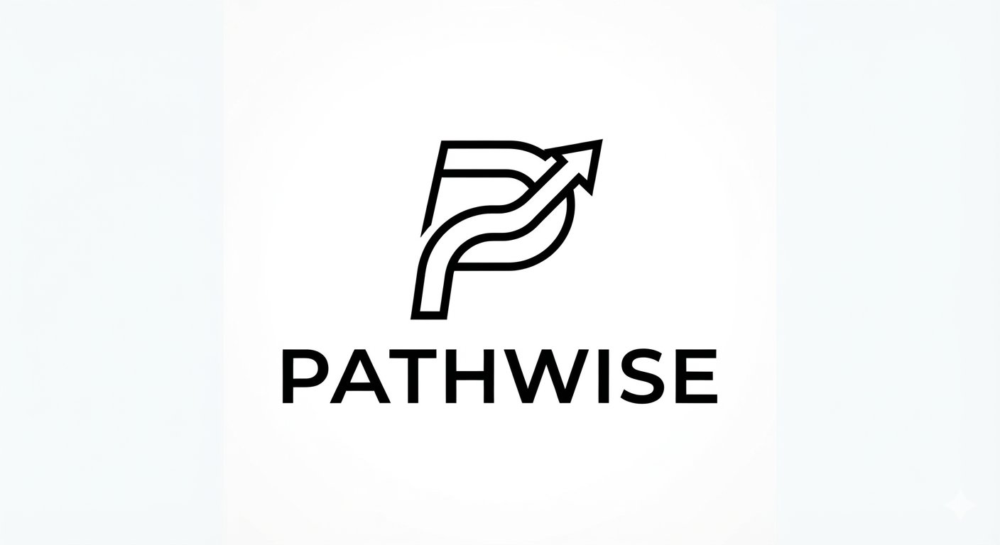

POLICY / 02
Terms & Conditions
Last updated: November 20, 2026
Use of the planner
Pathwise is a personal planning tool for engineering students. You are responsible for the accuracy of the profile and course-completion information you enter.
Academic guidance
Course sequences, prerequisites, exam-format summaries, example mark calculations, and pass thresholds are illustrative and are not an official degree audit, registration, or academic-advising decision. Requirements vary by institution and may change. Verify your plan and assessment rules with your academic advisor.
Accounts and data
Pathwise uses server-backed email and password accounts. Passwords are verified with a salted scrypt hash. Student records are encrypted in the browser with AES-GCM before being synchronized to the server database. Do not reuse a password from another service. Email verification, password recovery, and Google sign-in are not configured. Older local account data can be migrated after a successful sign-in.
Security and validation
Session cookies are HttpOnly and SameSite=Strict. The server validates profile, course, enrollment, assessment, and encrypted-payload inputs. Advisor Audit and validation requests send the specific profile or marks needed for server-side checks; these request bodies are not separately persisted. No system can guarantee complete security. The server operator can access account metadata and stored ciphertext, browser-side encryption cannot protect an unlocked or compromised device, and downloads/exports are not encrypted. Production deployments must use HTTPS and protect the server database and any backups.
Career information
Career pathways and external resource links are informational starting points, not job offers or endorsements. Check current eligibility, availability, and terms directly with the relevant organization.
Availability
The application is provided as available, without a guarantee that the catalog is complete, current, or suitable for a particular degree program.